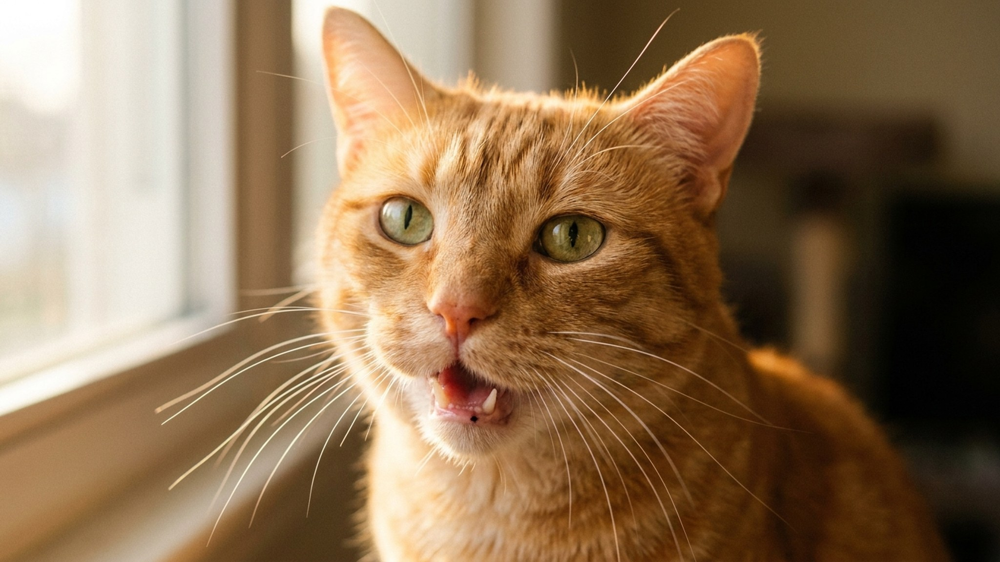

Взрослые кошки практически не мяукают друг с другом. Норвежский этолог Бьярне О. Браастад и его коллеги установили: мяуканье — это коммуникативная стратегия, которую кошки выработали специально для людей, адаптировав детский вокал для манипуляции взрослым человеком. Ваша кошка буквально говорит с вами на языке, который она эволюционно создала под вас. Вопрос — научились ли вы его слышать.
🐾 Всё о вашем питомце — в одном приложении
AI-ветеринар, дневник, напоминания о прививках и уходе. Установите AnimaLife — это бесплатно, в Telegram и MAX.
В дикой природе котята мяукают, чтобы позвать мать. Когда они взрослеют, мяуканье пропадает — взрослые дикие кошки общаются между собой с помощью запахов, поз, хвоста, урчания и шипения, но почти не мяукают вслух.
Домашние кошки сохраняют и развивают мяуканье на протяжении всей жизни — но направляют его на людей. Исследования Bjarne O. Braastad (Norwegian University of Life Sciences) и последующие работы группы Susanne Schötz (Lund University) показали: разные хозяева слышат в мяуканье своей кошки разные смыслы, и часто угадывают правильно — потому что кошка адаптирует звук под конкретного человека, с которым живёт.
Это означает, что кошка и хозяин вырабатывают персональный диалект. Именно поэтому чужую кошку понять сложнее, чем свою.
Как звучит: короткое, мягкое, иногда переходящее в трель (трелевое «мрр-мяу»). Высота 400-800 Гц. Длительность 0,2-0,5 секунды. Часто однократное.
Контекст: хозяин вошёл в комнату, вернулся домой, кошка проснулась. Сопровождается поднятым хвостом, приближением, потиранием о ноги.
Что значит: «Я тебя вижу, я рада.» Не требует ответного действия, но кошка ценит, когда на него реагируют — хотя бы взглядом или словом.
Как звучит: более длинное, интонационно поднимающееся к концу, настойчивое. 500-1000 Гц. Повторяется, если не реагировать. Иногда с элементом «жалобы» в конце.
Контекст: время кормления (кошка быстро учит расписание), пустая миска, закрытая дверь, которую хочется открыть.
Что значит: «Сделай что-то прямо сейчас.» Самый часто неправильно интерпретируемый тип — хозяева принимают его за жалобу на боль. Ключевой признак требования: интенсивность растёт при игнорировании, прекращается при выполнении требования.
Как звучит: более протяжное, с нисходящей интонацией («заунывное»). 300-600 Гц. Длительность 0,5-1,5 секунды. Тихое, не требовательное.
Контекст: кошка одна, хозяин ушёл, скучно, неудобно лежать, что-то не так в окружении.
Что значит: «Мне не очень.» Не экстренное — просто дискомфорт. Отличается от требования тем, что не нарастает при игнорировании и не прекращается моментально при подходе к кошке.
Как звучит: быстрые, прерывистые звуки, напоминающие щёлканье зубами или «ка-ка-ка». Иногда вибрирующее. Не классическое «мяу» — скорее вокализация без полного открывания рта.
Контекст: кошка смотрит на птицу за окном, бабочку, муху — добычу, до которой не достать.
Что значит: предположительно — подавленный охотничий инстинкт в сочетании с возбуждением. Гипотеза: имитация звуков добычи (птичьего чирикания) как рефлекторная реакция. Точный механизм учёные ещё изучают. Не требует вмешательства — это норма.
Как звучит: громкое, протяжное, иногда похожее на плач ребёнка или человеческий вой. 200-600 Гц. Особенно выражен у некастрированных кошек в период течки, у котов — при запахе самки.
Контекст: половая охота, ночные «серенады» у некастрированных животных, иногда — при контакте с другой кошкой через дверь.
Что значит: гормональная вокализация. Если ваша стерилизованная/кастрированная кошка начала издавать подобные звуки без видимого контакта с другим животным — стоит проверить гормональный фон: у стерилизованных кошек иногда сохраняется остаточная гормональная активность или развиваются кисты яичников.
Как звучит: высокое, отрывистое, часто с шипением или рычанием в цикле. 800-1500 Гц. Интенсивное, прерывистое.
Контекст: незнакомый человек или животное, переноска/ветеринар, резкий шум, угроза территории.
Что значит: «Я напугана/угрожаю.» Это предупреждение — не жалоба и не просьба. Лучшая реакция: не подходить, не пытаться успокоить насильно, снизить раздражитель. Прикосновение к кошке в этом состоянии — риск царапины или укуса.
Как звучит: низкое, протяжное, монотонное гудение или стон. Иногда — короткий резкий крик при касании болезненного места. Кошки умеют скрывать боль, поэтому этот тип — редкость и тревожный сигнал.
Контекст: травма, острая боль в животе, мочеиспускание при цистите/МКБ, послеоперационный период.
Что значит: экстренная ситуация. Если кошка издаёт монотонный низкий стон в покое — к ветеринару немедленно. Если вскрикивает при мочеиспускании и при этом ходит в туалет очень часто — возможно, острая задержка мочи (особенно у котов), это несёт угрозу жизни в течение 24-48 часов.
Как звучит: монотонное, продолжительное, нередко ночное. Похоже на жалобу, но без очевидного контекста — кошка стоит посреди комнаты и «гудит» без видимой причины. Или мяукает, уставившись в стену.
Контекст: кошки старше 12-15 лет, чаще ночью. Дезориентация в пространстве.
Что значит: когнитивная дисфункция (CDS) — «кошачья деменция». Кошка не узнаёт окружение, потеряла пространственный ориентир, ищет хозяина или просто «потерялась» в привычном доме. К ветеринару для подбора терапии (пропентофиллин, среда с ночниками, предсказуемый режим).
Поскольку каждая кошка вырабатывает персональный диалект с хозяином, универсальная таблица — только отправная точка. Несколько практических шагов:
🐾 Спросите AI-ветеринара прямо сейчас
AnimaLife — приложение, где AI-ветеринар отвечает на вопросы о кошке или собаке 24/7. Бесплатно, без записи и очередей.